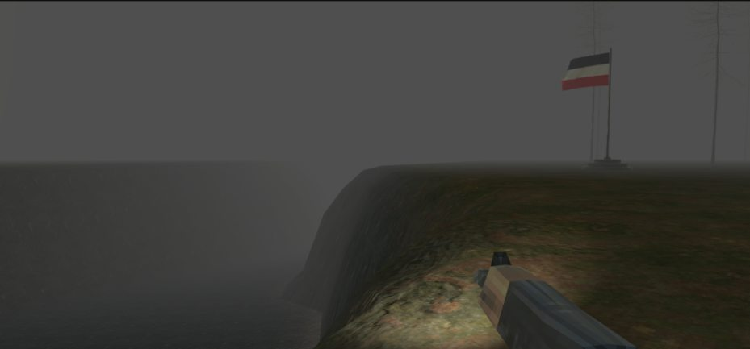
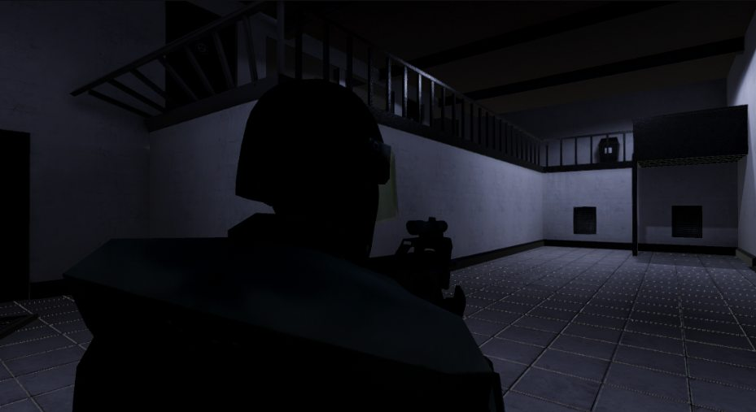
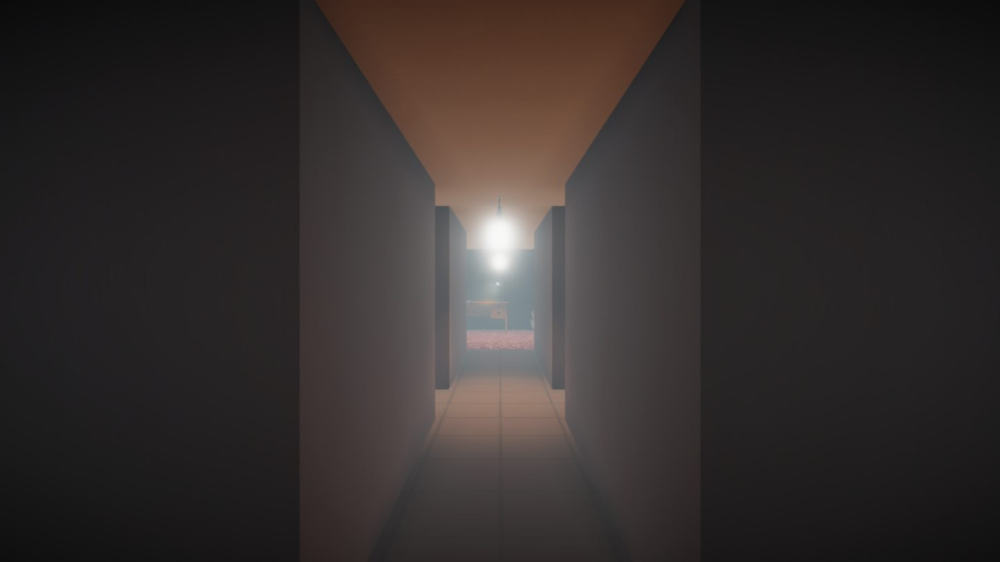

No man's land
Face the trenches of World War I in a PS1-style first-person game about the fear of combat.
View gameChoose a game for screenshots and play links.

Face the trenches of World War I in a PS1-style first-person game about the fear of combat.
View game
Become SCP-173. Hunt the humans inside a containment facility in this role-reversal horror game.
View game
Take on a world ruled by bosses. Set your own respawn point and use electrical platforms to cross the toughest sections.
View game
Follow the routine. Question everything. An ordinary day turns uneasy in this first-person horror game.
View game